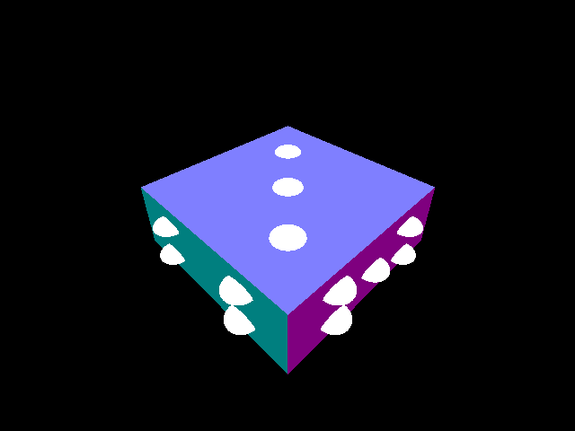

In this assignment, we had to write a simple raytracer. The program takes a text file on input, and raytraces the scene with all its objects, lighting, and transforms to produce the image. We had to calculate where the rays intersected the various objects, and also calculate the shading from the lights. This included recursive raytracing to accurately show reflections. We also used basic OpenMP parallelism to improve the speed of the raytracer.
Milestone
Test scene 2 (scaled):

Test scene 3 (translated and rotated):
Final
Test scene 4 (using only the ambient):

Test scene 4 (using only the diffuse):
Test scene 4 (using only the emission):

Test scene 4 (using only the specular):
Test scene 5 (contains 1,000 spheres):
Test scene 6 (demonstrates shadowing and reflections):
Test scene 7 (contains 100,000 polygons):
Handwritten scene: demonstrates most implemented aspects (transformations, lighting, shadow, reflection, etc.):